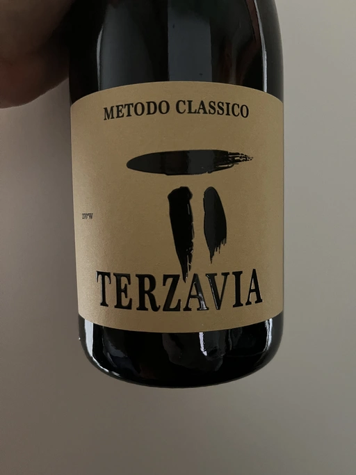
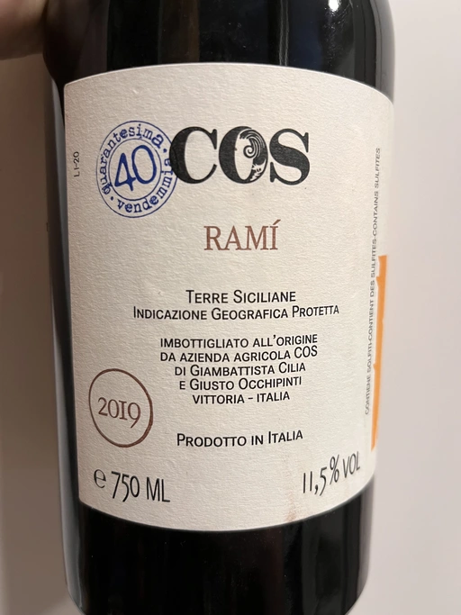
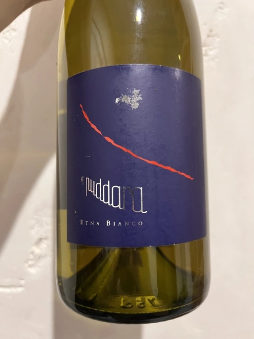
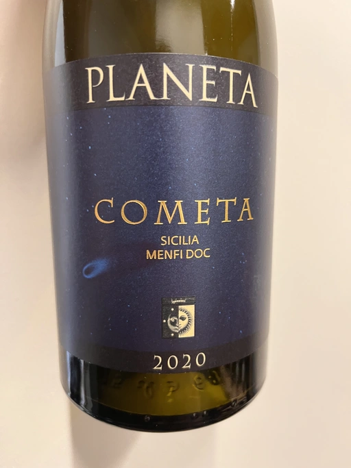
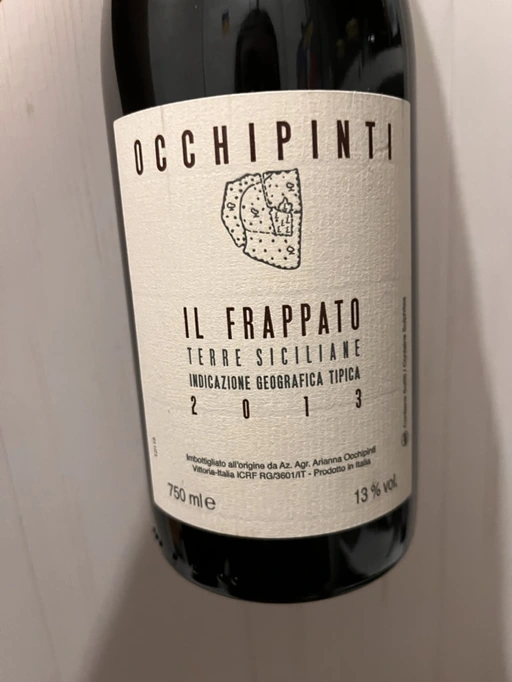
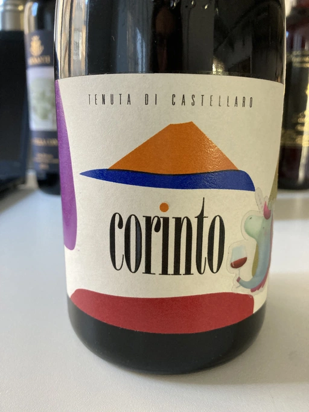
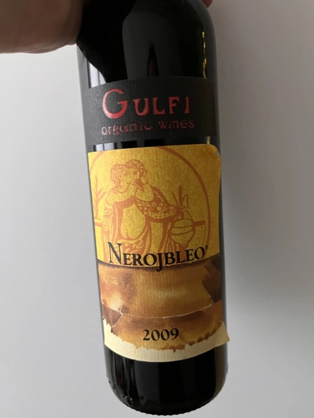
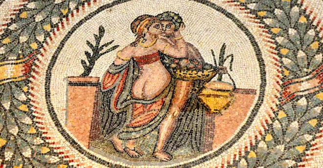

Il Pirata Vol. 2

Sicily is a land of emotions, diversity and uniqueness. With wine history spanning over 3000 years back to the past, it only recently became a great spot on the wine map. Some associate it with flabby Marsala wines or bold Nero d’Avola, while others - with gorgeous Etna wines. But there is more to Sicily than just Chardonnay from Planeta. You can travel from east to west, from north to south (don’t forget about Pantelleria and the Aeolian Islands), and you will find original gems and characters at every stop. This is a personal story of love. And this is the story of Sicily the way I see it.
- Marco De Bartoli Terzavia 2018
- COS Ramí 2019
- Tenuta di Fessina A’Puddara Etna Bianco 2010
- Planeta Cometa 2020
- Arianna Occhipinti Il Frappato 2013
- Tenuta di Castellaro Corinto 2017
- Gulfi Nerojbleo 2009
Marco De Bartoli Terzavia 2018

- producer: Marco De Bartoli
- name: Terzavia
- vintage: 2018
- degorgee: 2021
- sur lie: >18 months
- grapes: Grillo
- appellation: Sicilia DOC
- location: Contrada Samperi, Marsala (TP), Western Sicily, Italy
- alcohol: 11.5
- sugar: 3
- price: 1042 UAH
I know, a bottle of Sicilian Grillo is not shocking at all. Even a sparkling bottle of Grillo. Especially considering how pushy I am when it comes to this diverse island. Even more, I bet many of you (readers including) expected this bottle to appear. Considering how small the choice of sparkling wines from Sicily is, I am here to confirm your expectations.
Terzavia, meaning “the third way”, is an interpretation of Grillo that represents the tradition of an evolving territory, highlighting unexplored characteristics so far. French tradition with a strong Sicilian personality. Grillo is a variety that continues to amaze with its versatility and strength in this “third way”, a traditional method sparkling wine, expressing a land highly suited to great wines.
— Marco De Bartoli
A 100% Grillo harvested from 30+ years old vines growing in Contrada Samperi, Marsala. The clusters are manually selected, and the grapes are cooled. The whole clusters are pressed softly. After a natural decanting of the must, fermentation starts with the power of indigenous yeasts in stainless steel tanks. 20% of the grapes continue fermentation in French oak barrels at a controlled temperature (air conditioning). Tirage with fresh must (instead of sugar) is added in such quantities as to dilute alcohol content and to add a dose of (natural) sugar enough to start the second fermentation. After tirage, the wine spends at least 18 months on lees. Pas dosé.
COS Ramí 2019

- producer: COS
- name: Ramí
- vintage: 2019
- grapes: Inzolia, Grecanico
- appellation: IGP Terre Siciliane
- location: Vittoria, Ragusa province, South-Eastern Sicily, Italy
- alcohol: 11.5
- sugar: 1
- price: 1790 UAH
Azienda Agricola COS was founded in 1980 by three friends: Giambattista Cilia, Giusto Occhipinti, and Cirino Strano. The name is just an acronym of their family names (in case you didn’t notice). The trio is known for the transformation of Cerasuolo di Vittoria wine from DOC to DOCG level (the only one on the island), as their 2005 release was the first to bear the new designation.
COS started its adventure with biodynamic farming and neutral terracotta vases. In 2007 (after moving to a new location), they decided to get rid of all their oak barrels in favour of 150 huge amphoras.
So today, we have a bottle of a 50-50 blend of Grecanico and Insolia growing at 230 meters above sea level on red soils of limestone-siliceous nature. The average age of vines is 12 years. Spontaneously fermented on the skins with indigenous yeasts. Aged in concrete tanks for… some time? Unfortunately, COS are not so kin to share technical information about their wines. So I pity those who missed our tasting event.
Tenuta di Fessina A’Puddara Etna Bianco 2010

- producer: Tenuta di Fessina
- name: A’Puddara Etna Bianco
- vintage: 2010
- grapes: Carricante
- appellation: Etna DOC
- location: Contrada Manzudda, Biancavilla, Etna, Sicily, Italy
- alcohol: 12.5
- sugar: N/A
- price: 2190 UAH
Mount Etna. Crazy winemaking region with its charm, elegance, beauty, and, most importantly, character. A place to visit, to fall in love with, and stay for the rest of your life. After visiting Sicily in 2006, Silvia Maestrelli decided to start a new phase in her life. And after lengthy negotiations with numerous landowners, she started Tenuta di Fessina on the slopes of Etna mountain. Since its start in 2007, Silvia Maestrelli was trying to combine the sensitivity of a “feminine” oenological vision with the unquestioned technical skills of consultants and collaborators.
A’puddara (a pole star) is an ode to Carricante, a guiding star of Mount Etna. The 2 ha vineyard was planted in 1950 at 900 meters above sea level. It is located in the Biancavilla production area (southern parts of the volcano), Contrada Manzudda. This area is composed of small volcanoes and crates from remote eras. They led to the formation of limestone caves and a terroir composed mainly of clayey particles, lapilli leftovers, sand and volcanic ash. There are tiny fractions of potassium, basaltic lavas and ancient tuffs. Combined with thermic excursion and the high rates of the genotypic acidity of the indigenous grapes (including Carricante), it is believed that the terroir produces wines with great ageing potential. Well, we have an opportunity to check it.
The fruits are crushed without de-stemming and softly pressed with separation of the musts. After cold static decantation, the wine is fermented in 3500-litre French oak barrels. Refined on lees for 6-8 months. Total production is relatively small - 6000 regular and 150 magnum bottles.
Planeta Cometa 2020

- producer: Planeta
- name: Cometa
- vintage: 2020
- grapes: Fiano
- appellation: Menfi DOC
- location: Menfi, South-Eastern Sicily, Italy
- alcohol: 13
- sugar: 1.9
- price: 1358 UAH
Despite the rich wine history that spans over 3000 years, Sicily started to appear on international wine maps only in the last few decades. Planeta winery is among the leading winemakers responsible for quality revolution on the island. Unlike Marco De Bartoli (who is also among these giants), Alessio Planeta decided to experiment with international grapes alongside autochthonous ones. In 1985, after establishing the first winery at Ulmo, they planted their first vines. And ten years later, they released their first wine - Chardonnay. Many consider (citation needed) that this particular wine (among a few others) changed the perception of Sicily on the international market.
Today Planeta owns 6 wineries across Sicily: Ulmo and Dispensa in Menfi, Dorilli in Vittoria, Buonivini in Noto, Feudo di Mezzo on Etna and La Baronia in Capo Milazzo.
One might rightfully wonder. Why do we have a bottle of Fiano instead of the famous Chardonnay? After all, Fiano originates from Campania. While Fiano is not well known outside of Avellino, Sicily is still a big producer. And most importantly, Cometa is another iconic wine in modern history. Besides, how often do you taste wines made of Fiano grape?
Cometa is made in Dispensa estate in Menfi. Handpicked grapes are stripped of stems and sent to the press. 90% of the must is fermented in stainless steel and 10% in 225L barrels. After a certain period of maturation on fine lees, the wine is blended and prepared for bottling.
Arianna Occhipinti Il Frappato 2013

- producer: Arianna Occhipinti
- name: Il Frappato
- vintage: 2013
- grapes: Frappato
- appellation: IGP Terre Siciliane
- location: Vittoria, Ragusa province, South-Eastern Sicily, Italy
- alcohol: 13
- sugar: 0.2
- price: 2890 UAH
Arianna Occhipinti is a winemaker from Vittoria who founded her own winery in 2004, bottled her first commercial vintage in 2006 and today works exclusively with estate fruit. She embraced winemaking thanks to her uncle, Guisto Occhipinti, proprietor of Vittoria’s most famous winery, COS. At the age of 16 years, Arianna started to help him in the cellars. She loved this experience so much that her future connected to wine tightly.
After graduating from oenology school, Arianna started with only 1 hectare of abandoned vines attached to a family vacation house. Over the years, she acquired 25 hectares featuring only autochthonous varieties - 50% Frappato, 35% Nero d’Avola and 15% white varieties Albanello and Zibibbo. Almost all vines are young because Arianna planted them on her own. But she also added to her holdings 60 years old albarello-trained vines, which she initially rented.
Il Frappato stems from a dream which I had when I was a girl to make a wine that knows the land that I work, the air I breath and my own thoughts. It is bitter, bloody and elegant. That is and the Iblei Mountains. It is the wine that most resembles me, brave, original and rebellious. But not only. It has origins, for this it loves its roots and the past that it brings in; but, at the same time, it is able to fight to improve itself. It knows refinement without forgetting itself.
These days Arianna Occhipinti is famous as a biodynamic winemaker. There is zero irrigation in her vineyards in this hot, windy climate! To protect the vines, she grows cover crops (like fava beans) and other plants between every other row. Arianna tries to minimize intervention in the winemaking process.
Arianna is regarded as a symbol of success in the world of Biodynamic Farming and Natural Wine Making. She has remained committed to those principles while evolving from her originally more dogmatic outlook. Below is her response to importer Jules Dressner’s question about her feeling about the term “natural wine”:
I make natural wine, but this is a term I’m beginning to be less and less comfortable with, because its implications are very complicated. I really want to stress that my main goal is to make a good wine that reflects where it comes from, and for me the only way to successfully do this is to make the wine naturally. When I first started, people were just starting to talk about natural wine. It was very important to me to think about all these issues, and in those early years I definitely had a more militant attitude about it. Making natural wine was a mission, something worth fighting for. Now that I’ve grown up a little bit, the mission is making wine of terroir. You have to respect the vineyards, and nature in general. When I wake up in the morning, I want to feel free. Making this wine is my opportunity to feel free. So again, my goal is not to make natural wine, working this way is a process to make good wine.
Il Frappato is 100% Frappato from 40-years old vines growing on red sands and chalk soils. The grapes are destemmed and macerated for 30 days and then aged for 14 months in large 25hl Slavonian oak barrels.
Tenuta di Castellaro Corinto 2017

- producer: Tenuta di Castellaro
- name: Corinto
- vintage: 2017
- grapes: Corinto
- appellation: IGP Terre Siciliane
- location: Aeolian Islands, Lipari, Northern Sicily, Italy
- alcohol: 13
- sugar: N/A
- price: 1250 UAH
Now let me ask you a question. What do you know about winemaking on the Aeolian Islands? A volcanic archipelago in the Tyrrhenian Sea north of Sicily, best known for Stromboli and Lipari. But wines? Tenuta di Castellaro is probably the only winery known outside of this land. Alright, alright. We already tasted this particular wine on 2nd November 2021 as part of the first Il Pirata. So some of you are not amazed at all. Still…
Massimo Lentsch and Stefania Frattolillo, entrepreneurs from Bergamo (Lombardy), simply fell in love with Lipari and decided to create a work of art here. The winery came to life in 2005. They invited Alessandro Zanutta, an agronomist from Collio, and Emiliano Falsini, a winemaker from Tuscany. You see, it’s all about coming there and not being able to fleet.
Today we have a bottle made of Corinto Nero. It is a rare grape that originates from Greece, though today, it also grows in Turkey and the Po Valley in Emilia-Romagna. As they joke, this bottle exists only thanks to eno-archeology. The vines grow at 350 meters above sea level on sandy, volcanic, deep and fertile soils rich in microelements. The grapes are handpicked and destemmed. Vinification happens in French oak barrels with maceration for about 10 days. After that, the wine is poured into 500L barrels where malolactic fermentation takes place and is then aged for at least one year prior to bottling.
Gulfi Nerojbleo 2009

- producer: Gulfi
- name: Nerojbleo
- vintage: 2009
- grapes: Nero d’Avola
- appellation: Sicilia DOC
- location: Chiaramonte Gulfi and Ragoleti, Ragusa province, South-Eastern Sicily, Italy
- alcohol: 14
- sugar: 4.6
- price: 1534 UAH
The fact that my relations with Sicilian wines are special might be something obvious. But not many people know that it all started with Gulfi stand at the very first Kyiv Wine festival. When we met, I was already tired (e.g. drunk). I almost passed by, disgusted by my own weakness, when a Gulfi representative (apologies, I don’t remember her name) stopped me and offered a glass of their wine. I looked at the representative welcoming face. I looked at the naked ass on the label. And I realised there are no reasons to reject this present from Dionysus. And even though I don’t remember which wines I tasted exactly, the Gulfi imprint is what I took out of that overly drunk day.

It is worth mentioning that the naked ass on the label has a meaning. A meaning close enough to what one might think. Meet an ancient mosaic from Villa Romana del Casale located in Piazza Armerina in the province of Enna. This mosaic depicts Eros (Cupid) and Psyche (Beauty). According to the story, out of envy of Venus, they are forced to love each other in secret. But passion rarely goes unnoticed, and in their case, it found a physical manifestation (no puns) in the form of a daughter (no puns, seriously) they called Vulptas (literally meaning ‘pleasure’), a goddess of sensual pleasures. And how does it connect to Gulfi? Sicily is Psyche, Gulfi is Eros, and their child is wine, a sensual pleasure.
Enough of food for your fantasies. Nerojbleo is 100% Nero d’Avola from different vineyards in the countryside of Chiaramonte Gulfi and Ragoleti (Ragusa province, just like the famous city of Vittoria). The grape is named after Avola, a small town near Pachino in the province of Siracusa (near Ragusa). Fruits are fermented with long maceration on their skins. The wine is aged in barriques and tonneaux of French oak (225L and 500L) for 12 months.
Scores
- Marco De Bartoli Terzavia 2018
- COS Ramí 2019
- Tenuta di Fessina A’Puddara Etna Bianco 2010
- Planeta Cometa 2020
- Arianna Occhipinti Il Frappato 2013
- Tenuta di Castellaro Corinto 2017
- Gulfi Nerojbleo 2009
| Wine #1 | Wine #2 | Wine #3 | Wine #4 | Wine #5 | Wine #6 | Wine #7 | |
|---|---|---|---|---|---|---|---|
| Artem O | 3.70 | 3.90 | 4.00 | 3.80 | 4.10 | 4.30 | 4.20 |
| Oleksandr R | 3.00 | 3.20 | 4.00 | 4.30 | 3.70 | 4.30 | 4.10 |
| Ivietta K | 4.40 | 3.90 | 4.50 | 4.00 | 3.80 | 4.40 | 4.30 |
| Dmytro D | 4.00 | 4.20 | 4.50 | 3.70 | 4.00 | 4.20 | 3.80 |
| Oleksii K | 2.50 | 4.20 | 4.00 | 3.60 | 3.80 | 3.80 | 4.00 |
| Dimitry G | 3.70 | 3.20 | 4.00 | 4.50 | 3.90 | 4.30 | 3.60 |
| Mariia S | 3.70 | 3.50 | 4.20 | 4.00 | 3.60 | 3.90 | 3.80 |
| Kris S | 4.00 | 3.00 | 4.20 | 3.50 | 3.00 | 4.00 | 4.20 |
| Olena H | 3.60 | 3.60 | 4.00 | 3.80 | 3.60 | 4.00 | 3.90 |
| Daria K | 3.00 | 3.20 | 4.00 | 3.50 | 3.80 | 4.40 | 4.00 |
| Andrey U | 2.70 | 3.20 | 4.00 | 3.80 | 4.20 | 4.30 | 4.40 |
| Boris B | 4.00 | 4.00 | 4.20 | 3.80 | 4.40 | 4.00 | 4.00 |
| amean | sdev | favourite | outcast | price | QPR | |
|---|---|---|---|---|---|---|
| Wine #1 | 3.52 | 0.3185 | 0.00 | 4.00 | 1042.00 | 1.1558 |
| Wine #2 | 3.59 | 0.1724 | 1.00 | 4.00 | 1790.00 | 0.7388 |
| Wine #3 | 4.13 | 0.0339 | 7.00 | 0.00 | 2190.00 | 1.3422 |
| Wine #4 | 3.86 | 0.0841 | 1.00 | 1.00 | 1358.00 | 1.4309 |
| Wine #5 | 3.83 | 0.1152 | 1.00 | 1.00 | 2890.00 | 0.6402 |
| Wine #6 | 4.16 | 0.0391 | 3.00 | 0.00 | 1250.00 | 2.4438 |
| Wine #7 | 4.03 | 0.0485 | 0.00 | 0.00 | 1534.00 | 1.6247 |
How to read this table:
ameanis arithmetic mean (and not ‘amen’), calculated as sum of all scores divided by count of scores for particular wine. It is more useful thantotal, because on some events some wines are not tasted by all participants.sdevis standard deviation. The bigger this value the more controversial the wine is, meaning that people have different opinions on this one.favouriteis amount of people who marked this wine as favourite of the event.outcastis amount of people who marked this wine as outcast of the event.priceis wine price in UAH.QPRis quality price ratio, calculated in as100 * factorial(rms)/price. The reason behind this totally unprofessional formula is simple. At some point you have to pay more and more to get a little fraction of satisfaction. Factorial used in this formula rewards scores close to the upper bound 120 times more than scores close to the lower bound.